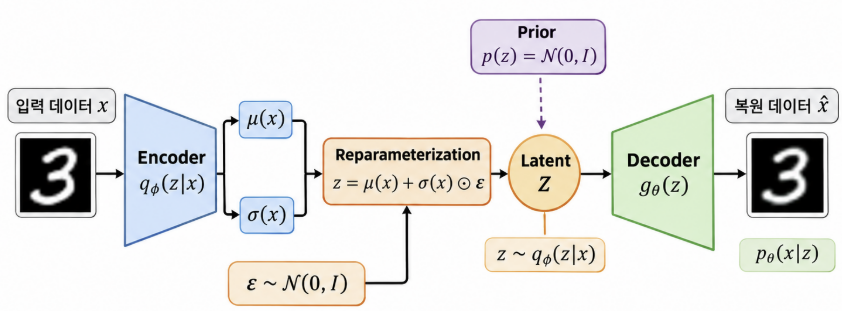
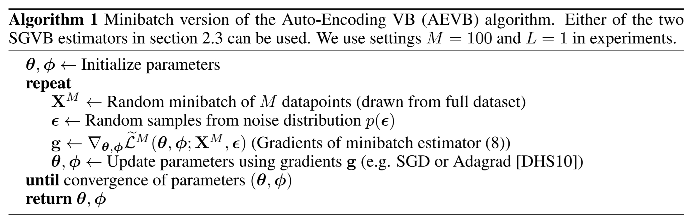
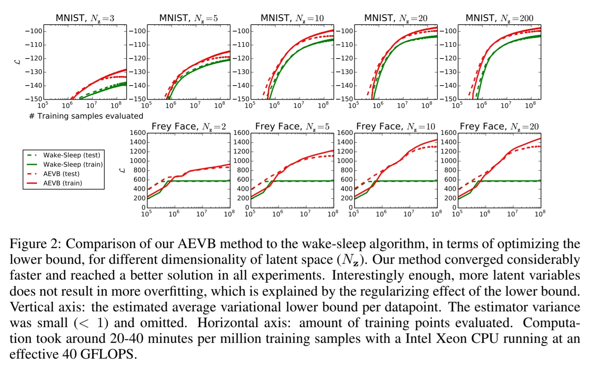
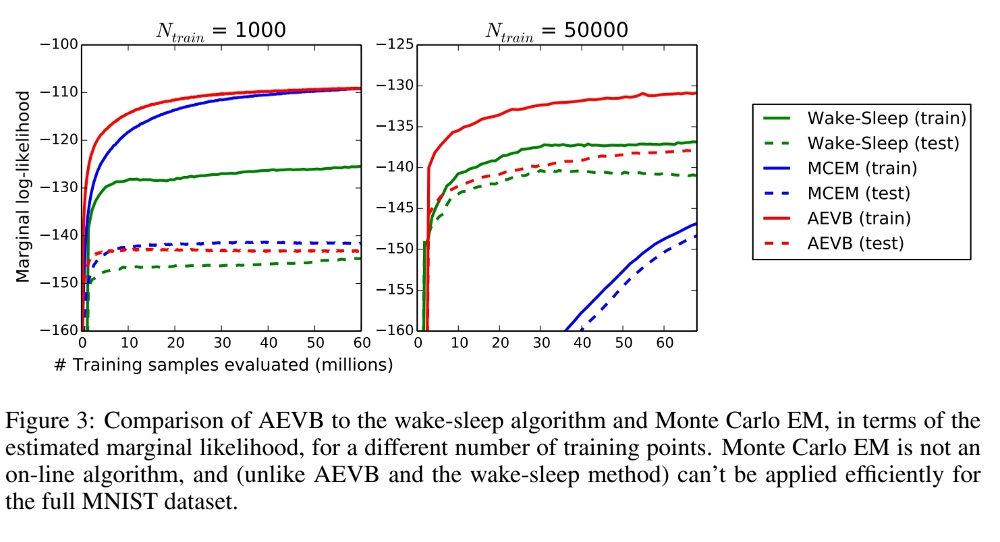
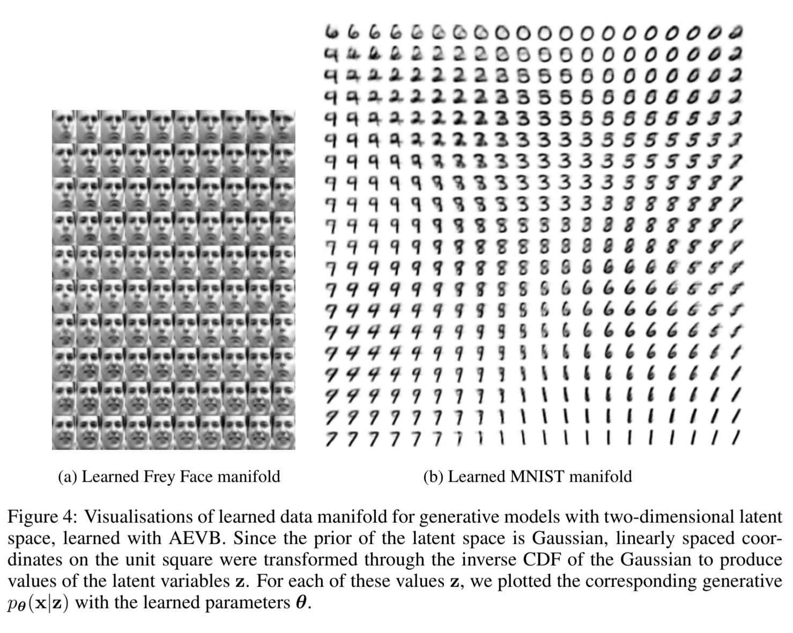
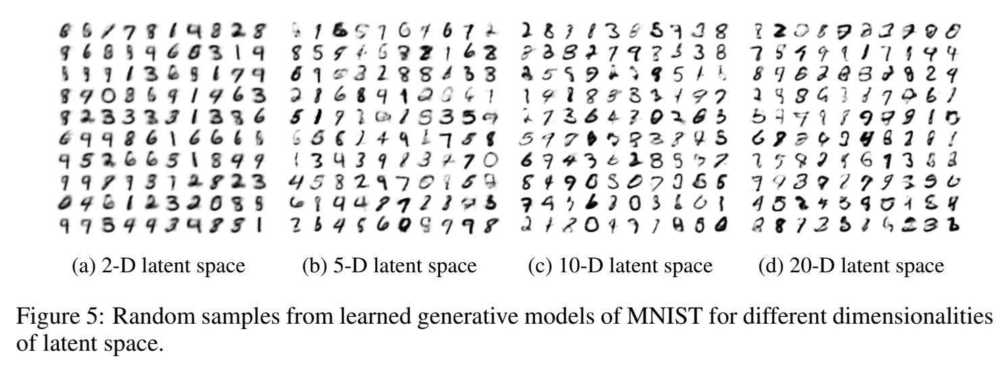
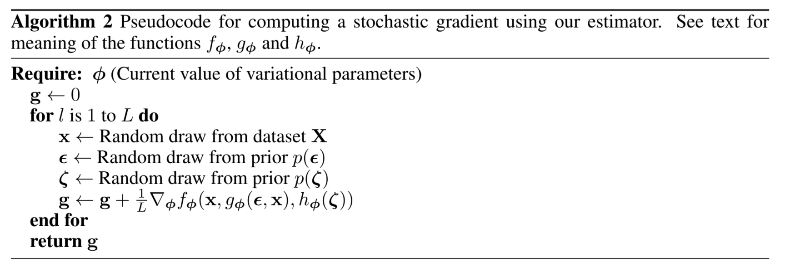

Introduction
We are interested in how can we perform efficient inference and learning for probabilistic models with intractable posterior distributions and large datasets.
- We use reparametrization of the variational lower bound, so that it can be simply differentiated and optimized by SGD.
- Posterior inference can be made by fitting approximate inference model(a.k.a recognition model) using lower bound estimator.
We propose Auto-Encoding variational bayesian(AEVB) with SGVB estimator, which doesn’t need of expensive iterative inference schemes such as MCMC.
Method
Problem scenario
Dataset X={x(i)}i=1N consisting of N i.i.d. samples.
For unobserved continuous random variable z,
- z(i)∼pθ∗(z)
- x(i)∼pθ∗(x∣z)
We also assume that pθ∗(z) and pθ∗(x∣z) come from parametric families of pθ(z) and pθ(x∣z), and their PDFs are differentiable.
Note that true paramter θ∗ and latent variables z(i) are unknown.
We should solve two assumption cases:
- Intractability
pθ(x)=∫pθ(z)pθ(x∣z)dz is intractable.
- Large dataset
For example, MCMC-based methods are computationally expensive because they require iterative posterior sampling for each datapoint.
We construct recognition model qϕ(z∣x): approximation to the intractable true posterior pθ(z∣x).
We train the recognition model parameters ϕ with the generative model parameters θ.
The variational bound
Marginal likelihood
The marginal distribution is obtained by integrating out the latent variable z from the joint distribution: pθ(x)=∫pθ(x,z),dz=∫pθ(x∣z)pθ(z),dz.
When the observed data x is fixed and pθ(x) is treated as a function of θ, it is called the marginal likelihood: L(θ;x)=pθ(x).
Thus, the same expression can be interpreted as either a marginal distribution over x or a marginal likelihood over θ, depending on which variable is fixed.
The variational bound
The marginal likelihood logpθ(x(1),x(2),⋯,x(N))=∑i=1Nlogpθ(x(i)) can be rewritten as:
logpθ(x(i))=DKL(qϕ(z∣x(i))∣∣pθ(z∣x(i)))+L(θ,ϕ;x(i))(1)
Note that DKL(p∣∣q)=∫p(x)logq(x)p(x)dx=Ep[logq(x)p(x)].
Since KL divergence is non-negative, L(θ,ϕ;x) is called the variational lower bound on the marginal likelihood of datapoint i.
logpθ(x(i))≥L(θ,ϕ;x)=Eqϕ(z∣x)[−logqϕ(z∣x)+logpθ(x,z)](2)
Proof of (1), (2)
logpθ(x)=Eqϕ(z∣x)[logpθ(x)] since x is not related to z.
Eqϕ(z∣x)[logpθ(x)]=Eqlog[pθ(z∣x)pθ(z,x)]=Eq[logpθ(z∣x)qϕ(z∣x)⋅qϕ(z∣x)pθ(z,x)]=DKL(qϕ(z∣x)∣∣pθ(z∣x))+Eq[−logqϕ(z∣x)+logpθ(z,x)]
Also lower bound L can be written as:
L(θ,ϕ;x(i))=−DKL(qϕ(z∣x(i))∣∣pθ(z))+Eqϕ(z∣x(i))[logpθ(x(i)∣z)](3)
Proof of (3)
L=Eq[−logqϕ(z∣x)+logpθ(z,x)]=Eq[−log(qϕ(z∣x)+logpθ(x∣z)+logpθ(z)]=−DKL(qϕ(z∣x)∣∣pθ(z))+Eq[logpθ(x∣z)]
In VAE, the KL divergence term in (3) is called regularization, while the expectation term represents reconstruction error. The regularization measures how close the encoder's approximate posterior is to the prior distribution, while the reconstruction error measures how well the decoder reconstructs the input data.
We cannot calculate pθ(z∣x), so that we train the model by maximizing lower bound L.
Thus we want to differentiate and optimize the lower bound L. However, the usual Monte Carlo gradient estimator:
∇ϕEqϕ(z)[f(z)]=Eqϕ(z)[f(z)∇ϕlogqϕ(z)]≃L1∑l=1Lf(z(l))∇ϕlogqϕ(z(l))
has high variance since the estimated gradient can vary significantly depending on the sampled values. So we use reparametrization trick.
The reparametrization trick
It is often possible to express z∼qϕ(z∣x) as z=gϕ(ϵ,x), where ϵ is noise with independent marginal p(ϵ) and gϕ(⋅) is some vector-valued function.
Note that qϕ(z∣x)∏idzi=p(ϵ)∏idϵi, where dz=∏idzi.
Therefore, ∫qϕ(z∣x)f(z)dz=∫p(ϵ)f(z)dϵ=∫p(ϵ)f(gϕ(ϵ,x))dϵ.
Then we can construct a differentiable estimator: ∫qϕ(z∣x)f(z)dz≃L1∑l=1Lf(gϕ(x,ϵ(l))), where ϵ(l)∼p(ϵ).
Thus this reparametrization trick is ued to rewrrite an expectation w.r.t. qϕ(z∣x) s.t. Monte Carlo estimate is differentiable w.r.t. ϕ.
For example, the univariate Gaussian case: z∼p(z∣x)=N(μ,σ2). Then the reparametrization is z=μ+σϵ, where ϵ∼N(0,1).
EN(z;μ,σ2)[f(z)]=EN(ϵ;0,1)[f(μ+σϵ)]≃L1l=1∑Lf(μ+σϵ(l))
The SGVB estimator and AEVB algorithm
Using reparametrization trick, we introduce a practical estimator of the lower bound and its derivatives w.r.t. the parameters θ,ϕ.
We reparametrize z~∼qϕ(z∣x): z~=gϕ(ϵ,x) with ϵ∼p(ϵ).
We can from Monte Carlo estimates of expectations of some function f(z) w.r.t. qϕ(z∣x):
Eqϕ(z∣x(i))[f(z)]=Ep(ϵ)[f(gϕ(ϵ,x(i)))]≃L1l=1∑Lf(gϕ(ϵ(l),x(i))) where ϵ(l)∼p(ϵ)(5)
We apply to (2), resulting in Stochastic Gradient Variational Bayes(SGVB) estimator L~A(θ,ϕ;x(i))≃L(θ,ϕ;x(i)):
L~A(θ,ϕ;x(i))=L1l=1∑Llogpθ(x(i),z(i,l))−logqϕ(z(i,l)∣x(i))(6)
where z(i,l)=gϕ(ϵ(i,l),x(i)) and ϵ(l)∼p(ϵ).
Since KL divergence can be analytically integrated for Gaussian distribution, we only need to estimate reconstruction error Eqϕ(z∣x(i))[logpθ(x(i)∣z)] by sampling.
Appendix B: Integration KL divergence analytically
Note that KL(N0∣∣N1)=21(tr∑1−1∑0+(μ1−μ0)T∑1−1(μ1−μ0)−k+lndet∑0det∑1).
KL(qϕ(z∣x)∣∣pθ(z))=21(tr(σi2I)+μiTμi−J+ln∏σi,j1)=21(j=1∑Jσi,j2+j=1∑Jμi,j2−J−j=1∑Jlnσi,j2)=21j=1∑J(μi,j2+σi,j2−lnσi,j2−1)
Then we can get the second version of SGVB estimator L~B(θ,ϕ;x(i))≃L(θ,ϕ;x(i)) corresponding to (3):
L~B(θ,ϕ;x(i))=−DKL(qϕ(z∣x(i))∣∣pθ(z))+L1l=1∑L(logpθ(x(i)∣z(i,l)))(7)
where z(i,l)=gϕ(ϵ(i,l),x(i)) and ϵ(l)∼p(ϵ).
For the minibatch XM={x(i)}i=1M with dataset X with N datapoints,
L(θ,ϕ;X)≃L~M(θ,ϕ;XM)=MNi=1∑ML~(θ,ϕ;x(i))(8)
Proof of (8)
L(θ,ϕ;X)=∑i=1NL(θ,ϕ;x(i)). If N is very large, then it is difficult to calculate ELBO. So we use the minibatch and consider their means.
M1i=1∑ML~(θ,ϕ;x(i))≃N1i=1∑NL(θ,ϕ;x(i))
In addition, we found that the number of samples L per datapoint can be set to 1 when the minibatch size M was large enough.

Example: Variational Auto-Encoder
Let the prior over latent variables z: pθ(z)=N(z;0,I). In this case, the pθ(x∣z) can be multivariate Gaussian for real-valued data or Bernoulli for binary data. This distribution parameters are computed with MLP.
Appendix C: MLP decoder for both cases
- Bernoulli MLP as decoder
logp(x∣z)=i=1∑Dxilogyi+(1−xi)⋅log(1−yi)
where y=fσ(W2tanh(W1z+b1)+b2) for elementwise sigmoid function fσ.
- Gaussian MLP as decoder
For diagonal covariance,
logp(x∣z)where μlogσ2h=logN(x;μ,σ2I)=W4h+b4=W5h+b5=tanh(W3z+b3)
In the VAE model, both prior pθ(z) and encoder qϕ(z∣x) are Gaussian. By appendix B, we can express (7) as:
L(θ,ϕ;x(i))≃21j=1∑J(1+log((σj(i))2)−(μj(i))2−(σj(i))2)+L1l=1∑Llogpθ(x(i)∣z(i,l))(10)
where z(i,l)=μ(i)+σ(i)⊙ϵ(i) and ϵ(l)∼N(0,I).
logpθ(x∣z) can be explained by appendix C for Gaussian or Bernoulli case.
Experiments




The visualization shows the images generated by the decoder from different points in the latent space. It demonstrates that nearby latent variables tend to produce similar images.
Full VB
In the main body of the paper, the derivations treat θ as a fixed parameter. However, VI can also be applied to θ.
Let pα(θ) be some hyperprior. Then the marginal likelihood is written as:
logpα(X)=DKL(qϕ(θ)∣∣pα(θ∣X))+L(ϕ;X)(13)
where L(ϕ;X)=∫qϕ(θ)(logpθ(X)+logpα(θ)−logqϕ(θ))dθ(14)
Let θ~=hϕ(ζ)withζ∼p(ζ).
L(ϕ;X)≃L1l=1∑Lfϕ(x(l),gϕ(ϵ(l),x(l)),hϕ(ζ(l)))(22)
